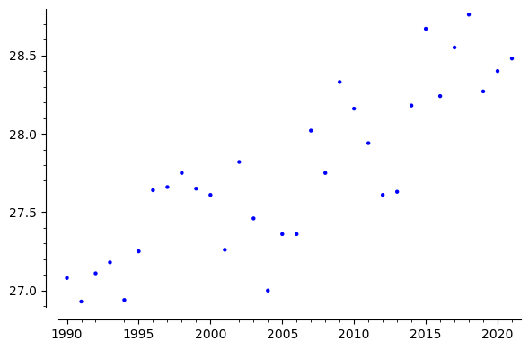
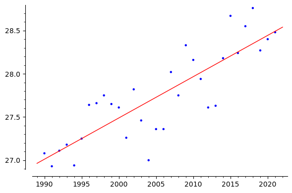

This chapter deals with linear least square problems and it applications.
Consider a system of equations \(Ax=b\) having \(m\) equations in \(n\) variables. Suppose \(m\geq n\text{.}\) Then this system may not have a solution. Then we can look for what is the best approximate solution. If \(z\in \R^n\) is a solution of \(Ax=b\) then \(\norm{Az-b}=0\text{.}\) Here \(\norm{Az-b}\) is the measure of how far \(b\) from \(Az\text{.}\) The aim is to find the point \(z \in \R^b\) such that \(Az\) is at the smallest distance from \(b\text{.}\) Thus if such a \(z\) exists then \(\norm{Az-b}\leq \norm{Ax-b}\) for all \(x\in \R^n\text{.}\)
The answer to the above question is “yes”. In order to find this, we consider
Note that \(W\) is subspace of \(\R^m\text{.}\) We are looking for \(z\) which is at the smallest distance from \(b\text{,}\) which is nothing but the orthogonal projection of \(b\) onto \(W\text{.}\) Suppose we assume that columns of \(A\) are linearly independent. Then \(W\) is the column space of. Hence by the Eq. (6.3.2), orthogonal projection is given by
\begin{equation*}
z = A(A^TA)^{-1}A^Tb\text{.}
\end{equation*}
Here the vector \(x^*=(A^TA)^{-1}A^Tb\) is called the least square approximation (solution) of\(Ax=b\text{.}\)
For the system \(Ax=b\text{,}\) after multiplying both sides by \(A^T\text{,}\) we get
\begin{equation*}
A^TAx=A^Tb
\end{equation*}
which is called the normal equation. We know that rank of \(A\) is equal to rank of \(A^TA\text{.}\) Hence \(A^T\) is invertible if \(A\) has linearly independent columns. Also the \(Ax=b\) has least square solution if and only if the associated normal equation \(A^TAx=b\) has a solution.
Note that the least square solution \(x^*=(A^TA)^{-1}A^Tb\) is the minimizer of the function \(f(x)=\norm{Ax-b}^2\text{.}\) This can also be obtained using calculus.
Find the polynomial of degree at most 2 which is closest to the function \(f(x)=|x|\text{.}\) Here we consider the subspace \(W={\cal P}_2(\R)\text{.}\) We need the find the orthogonal projection of \(f(x)\) onto \(W\text{.}\)
Hence the least square solution of \(Ax=b\) is the solution of the normal equation \(A^TAx=A^b\) which is \(x^*=\left(\begin{array}{rr}21/13\\20/13 \end{array} \right)\text{.}\) The same can obtained as \(x^* =(A^TA)^{-1}A^Tb\text{.}\)
(b) The orthogonal projection of \(b\) onto \(W\) is given by
(b) Since we have found \(w\text{,}\)\(u\) is given by \(b-w=\left(\begin{array}{r} -\frac{14}{13} \\ -\frac{2}{13} \\ \frac{3}{13} \\ -\frac{5}{13} \end{array} \right)\text{.}\) Hence
The average number of goals \(g\text{,}\) per game scored by a football player is related linearly to two factors, (i) the number \(x_1\) of years of experience and (ii) the number \(x_2\) of goals in the preceding 10 games. Find the linear The data on the following page were collected on four players. Find the linear function \(y=a_0+a_1x+a_2x_2\text{.}\)
goals \((g)\)
0.8
0.7
0.6
0.5
\(x_1\)
10
8
6
3
\(x_2\)
4
4
3
2
Example8.1.6.
The average annual temperature of Santacruz in Mumbai recorded from 1991 to 2021 is given in the following table.
Year
1990
1991
1992
1993
1994
1995
1996
1997
Temp
27.07
26.93
27.11
27.18
26.94
27.25
27.64
27.66
Year
1998
1999
2000
2001
2002
2003
2004
2005
Temp
27.75
27.65
27.61
27.26
27.82
27.46
27.00
27.36
Year
2006
2007
2008
2009
2010
2011
2012
2013
Temp
27.36
28.02
27.75
28.33
28.16
27.94
27.61
27.63
Year
2014
2015
2016
2017
2018
2019
2020
2021
Temp
28.18
28.67
28.24
28.55
28.76
28.27
28.40
28.48
Find the equation of the line that best fits these data points.
The temperature data is plotted in the Figure 8.1.7.

Figure8.1.7.
We wish to find the best fit line to the given set of data. Suppose the line is given by \(y=c+mx\text{,}\) then we wish to find \(a\) and \(b\) such that the line \(y=c+mx\) is best fit. Now what is meaning of "best fit". Suppose we consider the point \((x_i,y_i)\text{,}\) if it lies on \(c+mx\text{,}\) then \(y=c+mx_i\text{,}\) other wise \(|(c+mx_i)-y_i|\) is the error. We need to minimize this error for all the points. That is achieved by minimizing the sum of errors. Which is given by
The set of points along with the best fitted line is shown in the Figure 8.1.8

Figure8.1.8.
Subsection8.1.1Fitting a polynomial to the data set
Suppose we are given a set of \(n\)-data points \((x_i y_i)\) and we wish to find the best fit polynomial curve of degree \(p\text{,}\) say, \(y=a_0+a_1x+a_2x^2+\cdots +a_px^p\text{,}\) with \(a_p\neq 0\text{.}\) In this case, the error term for \((x_i,y_i)\) from the the the curve \(y\) is \(|(a_0+a_1x_i+a_2x_i^2+\cdots +a_px_i^p)-y_i|\text{.}\) Thus the sum of the error square is